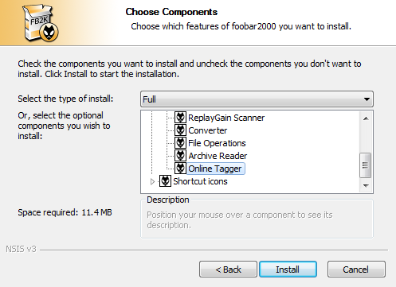
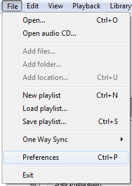
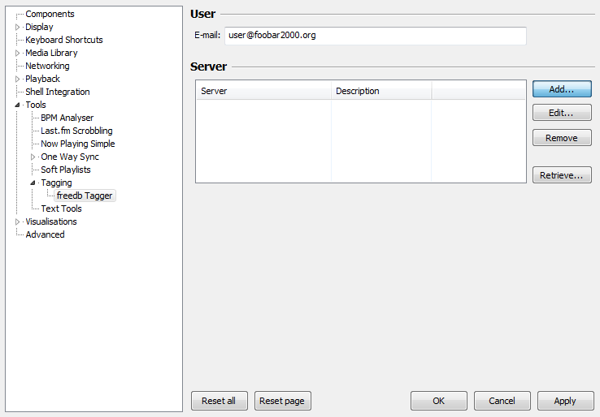
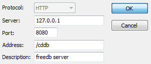
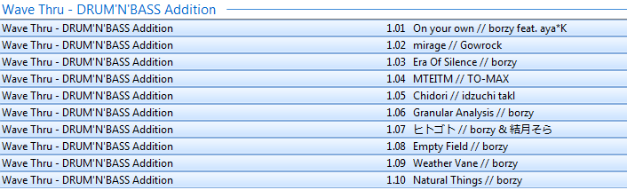
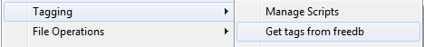
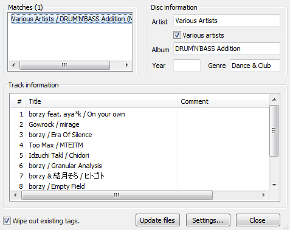

You must have the "Online Tagger" (foo_freedb2) plugin installed to access freedb in foobar2000.
To install this, check the box next to it during installation.
Once you have confirmed the "Online Tagger" plugin is installed, access the foobar2000 preferences page through the "File → Preferences" menu.
Select "Tools → Tagging → freedb Tagger" in the sidebar.
Click "Add" button.
Enter the server domain or IP into the "Server" textbox.
Enter the port into the "Port" textbox.
Enter the path into the "Address" textbox (usually "/cddb")
Click "OK"
Click "OK"
Import the files for the album you want to tag into foobar2000.
Select all files, in track order.
Tags may not be able to be found if any tracks are unselected or selected out-of-order.
Right click the tracks and select "Tagging → Get tags from freedb"
Confirm the tags and click "Update files"
Tagging complete!